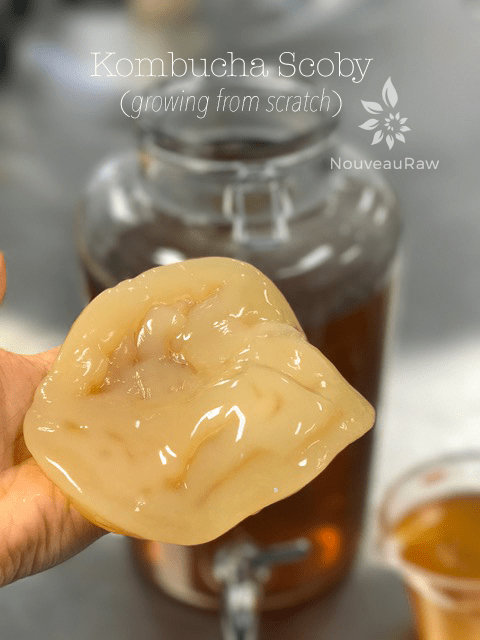
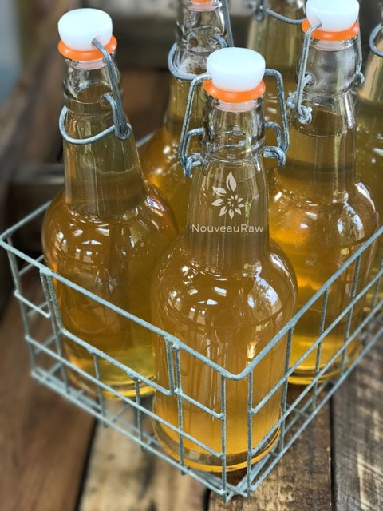

Kombucha

~ raw, vegan, gluten-free, nut-free ~
I have been working long and hard on this series… not only for you but for me. It has been quite the learning experience over the past year and a half.
In between the two recipes a week that I share with you, I am continually busy researching, learning and experimenting so I can share all that I learn with you. And now is the time to share my adventures in kombucha making.
Experience is the Teacher of all Things
I have dropped my SCOBY on the floor (the horror!), I have broken brewing vessels (flab-nab-it!), I have forgotten to turn off the spigot when filling bottles, walking away… creating a water kombucha fall all over the floor. (oy-vey!)
I have allowed kombucha to ferment too long, too short, and finally, getting it to the point where it is just right! I have encountered fruit fly infestations… and trust me, that was a sad sad day. (Uff-da) I have prayed, sang, and have even talked nonstop to my kombucha as it was brewing. Who needs a therapist?!
They say that experience is not what happens to you. It’s what you do with what happens to you. So I have learned to hold my SCOBY with great care and respect. I now remember to close the spigot on the brewing vessel to avoid mop-ups. I never forget to taste test my brew throughout its journey, so I can stop the process when it is just right for our taste buds. And I have come to appreciate the life form that it is… that’s ok to sing to your SCOBY and not feel like I ought to be hospitalized for it. So as you can see, it’s been quite the experience.

SCOBY-phobia is a clinical culinary diagnosis. :) I have quivered in the presence of the SCOBY, afraid to touch it, afraid that it might leap out of the jar and plant itself on my face… those living “creatures” can be very intimidating. For all I knew, they were a big slimy blob of bacteria that was put here to take over the world! Not totally convinced that they aren’t.
It didn’t take long though when I became very protective of my SCOBY. You find yourself having a deep respect for it; it is a mother after all. Bob and I have had certain conversations where I had to put up my hand and say, ” Hey, not in front of SCOBY, she might hear you.” lol
Let me start off by saying that kombucha making can become a very ceremonial tradition, and as time passes, you will find that there is a wide range of ways in which kombucha is made. Don’t let any of this frighten or confuse you. I am laying out the simple basics, and in time you will find your rhythm. We all dance to beat of our own drum, right?!
Right now, all the postings that I am sharing with you (as you can see below) are based on a continuous brew system. With a CB (continuous brew) system, it allows you to draw off what you need, replacing it with more sweet tea thus creating a nearly endless cycle. I go into more detail about this in other postings. This form of brewing also reduces the amount of cleaning and handling of the SCOBY and that my friends is a win-win situation!
Your Responsibility
What? Wait? I have a responsibility when it comes to brewing my own kombucha? You betcha! Think sour-dough bread or kefir. Except, kombucha doesn’t require daily feedings. But it does require a quiet, peaceful, and warm home to abide in. Once the brewing process begins, it doesn’t like to be moved all the much… “mother” doesn’t like to be disturbed. It’s a living organism, so speaks words of love and kindness around it. Think I am a bit off my rocker? That’s okay; I don’t mind if you view me that way… just take good care of that SCOBY and it will take care of you.
I hope that by the time you have reached this paragraph that you are ready to learn more so, you can dive into your home brewing experience. Below, you will find links to postings where I share all that I have learned. I broke them up, so it will be easier to reference back to in the future. And I am pretty confident that this section will grow as I continue to learn and share more.

Kombucha Learning Center
What is Kombucha?
Kombucha Continuous Brew Method
Kombucha Maintenance of Continuous Brew
Kombucha – Equipment Needed
Kombucha – Ingredients Needed
Kombucha SCOBY – Growing from Scratch
Testing Sugar Levels in Kombucha
Bottling Kombucha from a Continuous Brew
Second Fermentation of Kombucha – Adding Flavor & Effervescence
Kombucha Aesthetics
© AmieSue.com